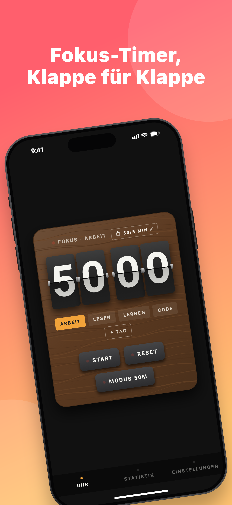
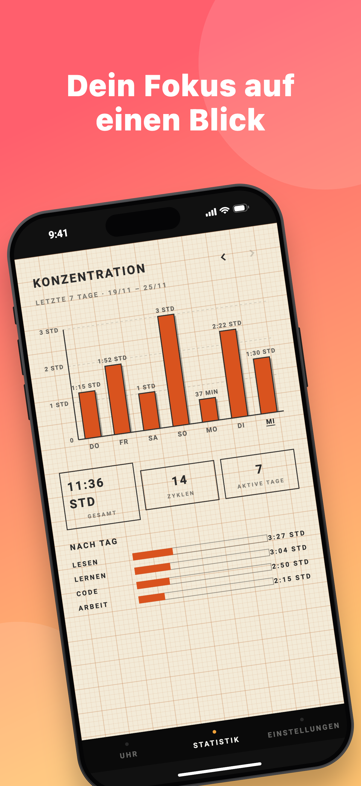
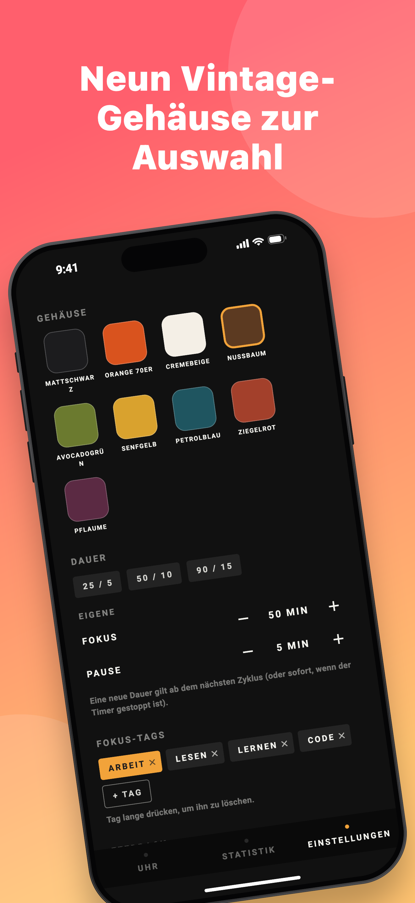
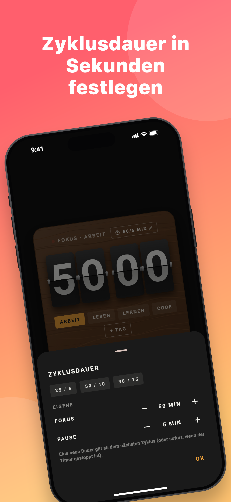

FlipFocus trasforma il tuo timer Pomodoro in un orologio meccanico a scatti ispirato agli anni '70. Ogni cifra si ribalta con un'animazione 3D, accompagnata da un clic netto e da una leggera vibrazione a ogni cambio.
Scegli il tuo ritmo: cicli da 25/5, 50/10 o 90/15 minuti. Collega ogni sessione a un'etichetta di concentrazione, predefinita o creata da te, così saprai sempre su cosa stai lavorando.
Il timer si basa sull'orario di fine, quindi resta preciso anche se chiudi l'app o blocchi lo schermo. Una notifica ti avvisa quando ogni ciclo termina.
Features
Volets animés en 3D
Un volet par chiffre, un clac sonore et une vibration à chaque changement.
Minuteur fiable
Calé sur l'heure de fin, il continue application fermée ou écran verrouillé et vous prévient à la fin du cycle.
Cycles Pomodoro
Rythmes 25/5, 50/10 et 90/15, et durées libres avec les fonctions avancées.
Tags de focus
Associez vos sessions à des tags intégrés ou créés par vous.
Statistiques sur papier millimétré
Visualisez vos sessions de concentration d'un coup d'œil.
Boîtiers d'époque et ambiances
Neuf boîtiers rétro et des ambiances sonores pour rester concentré.
Screenshots



